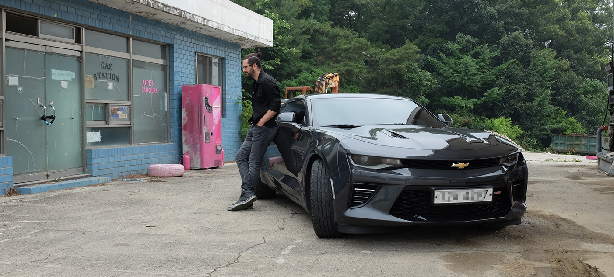

y0 is a term used in automotive 3D modelling; it refers to the longitudinal middle section of the car, along the y-plane. This is where car design starts most of the time; the y0 section is the silhouette designers and engineers spend hours tweaking and adjusting until they achieve the ideal proportions.
My name is Romain Diboine, I was born in 1988 in Toulouse, France and grew up nearby Paris.
I graduated in 2010 from Strate College Designers, a design school in Paris, with a car design master. The 5 years curriculum also gave me the chance to do a 1year school exchange at the College for Creative Studies in Detroit, where I had the chance to discover the rich american automotive culture at its source.
I later relocated to Seoul, South Korea, where I have been living since 2011. I am currently working as an automotive component designer for LG Electronics.
I have always been passionate about drawing and illustration. Even before I considered studying design, you would find me scribbling and doodling in middle & high school, draw short illustrated stories starring my friends and caricatures of my teachers. Even through and after college, I would always carry a little notebook wherever I go and sketch people, buildings, vehicles and landscapes.
Drawing cars has not been a big part of my life up until I started studying car design at school, despite my father working in car engineering. I got interested in those fascinating machines mostly for their sophisticated styling, innovative technologies, enthralling history, challenges and the crucial role they played in the way our societies were shaped during the last century, with automobiles becoming a way of life.
I started y0 in December 2018, when I decided that my dad's Christmas gift from me that year would be an illustration of his favourite car, the Ferrari 250 GTO. Although I did not really have any intention to go further, he really liked the gift and encouraged me to keep drawing more; A couple of years down the road, the complete y0 collection counts 100+ individual models from around 50 different brands.
When I am not at my desk working on my next artwork, you can find me playing and recording music at home, or exploring Korea on weekends behind the wheel of my 2016 Camaro SS.